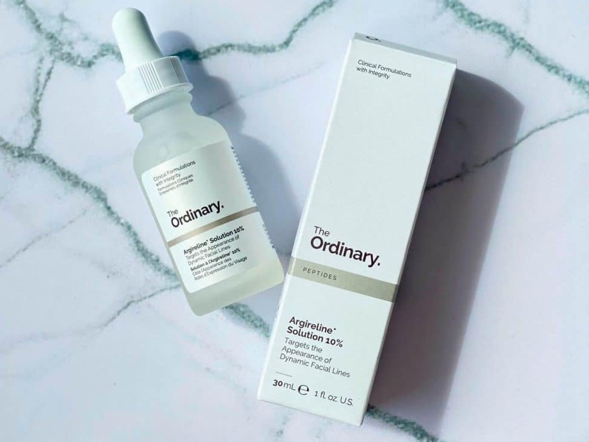
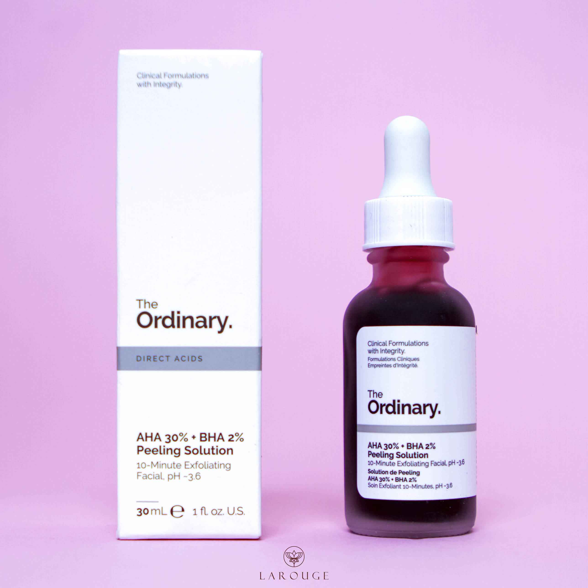

High-Spreadability

Es una hidratante que combina primer o prebase de maquillaje con suero. El High-Spreadability sirve para dar una mayor duración de las bases de maquillaje, hidratar y alisar la piel.
The Ordinary AHA 30%

Se trata de un exfoliante de la piel que sirve para eliminar la grasa que se acumula en los poros. Ayuda a lidiar con las líneas de expresión y con pequeñas manchas.
The Ordinary Buffet

Buffet de The Ordinary es un suero contiene una gran cantidad de aminoácidos e ingredientes que ayudan al cuidado de la piel. Este producto evita los síntomas de envejecimiento